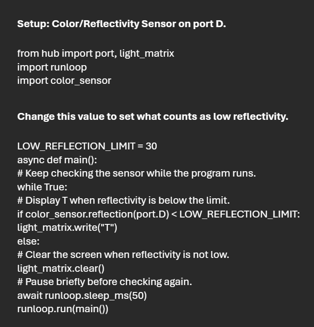

This activity introduced how sensors can provide live information to a robot or system and how code can respond to that data. I explored how input from the environment can guide behavior and help create a more responsive design. I also made a reflective sensor by setting up a light sensor so it could detect light bouncing back from a nearby surface, which let the robot react when it sensed a change in its surroundings.